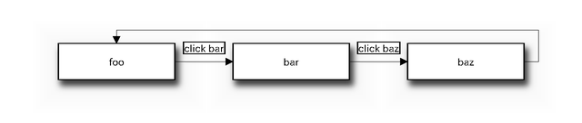
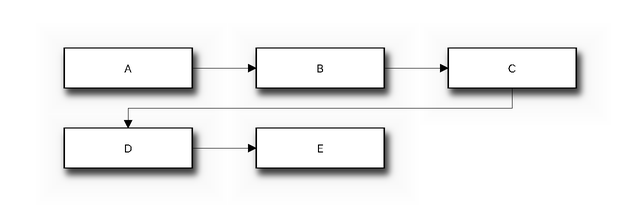
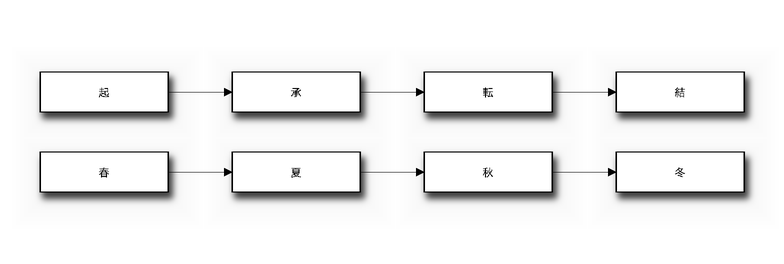
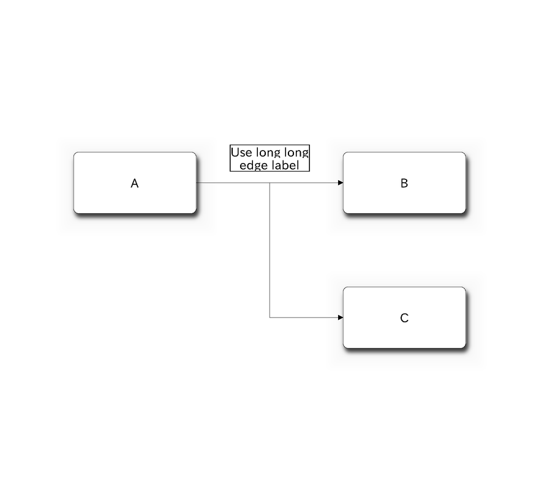
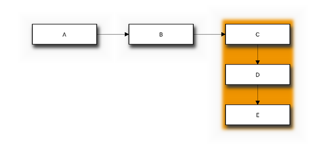

出力サンプル¶

ラベルの設定¶
diagram {
// ノードラベルの設定
A [label = "foo"];
B [label = "bar"];
C [label = "baz"];
// エッジラベルの設定 (短い文字列のみ)
A -> B [label = "click bar"];
B -> C [label = "click baz"];
C -> A;
}

ノード、エッジのカスタマイズ¶
diagram {
// ノードの設定 (枠線の種別、背景色)
A [style = dotted];
B [style = dashed];
C [color = pink];
D [color = "#888888"];
// エッジの設定 (線の種別、色)
A -> B [style = dotted];
B -> C [style = dashed];
C -> D [color = "red"];
// ノードの設定 (背番号)
E [numbered = 99];
// ノードの設定 (背景画像)
F [label = "", background = "source/diagrams/python-logo.gif"];
// エッジの設定 (接続の向き)
E -> F [dir = none];
F -> G [dir = forward];
G -> H [dir = back];
H -> I [dir = both];
}
![diagram {
// ノードの設定 (枠線の種別、背景色)
A [style = dotted];
B [style = dashed];
C [color = pink];
D [color = "#888888"];
// エッジの設定 (線の種別、色)
A -> B [style = dotted];
B -> C [style = dashed];
C -> D [color = "red"];
// ノードの設定 (背番号)
E [numbered = 99];
// ノードの設定 (背景画像)
F [label = "", background = "source/diagrams/python-logo.gif"];
// エッジの設定 (接続の向き)
E -> F [dir = none];
F -> G [dir = forward];
G -> H [dir = back];
H -> I [dir = both];
}](_images/blockdiag-6379d01868d64a6799be082a1911ef175670ca2e.png)


エッジの折り返し¶
バージョン 0.6.1 で追加.
{
A -> B -> C -> D -> E;
// C から D への接続を折り返す。(D は左側に配置される)
C -> D [folded];
}

日本語の利用¶
diagram admin {
// 日本語をラベルに指定することができます。
A [label = "起"];
B [label = "承"];
C [label = "転"];
D [label = "結"];
A -> B -> C -> D;
// クオートすると日本語をノード ID に使用できます。
"春" -> "夏" -> "秋" -> "冬";
}

ノート
blockdiag では UTF-8 エンコード以外の文字コードを扱うことはできません。
警告
日本語を含んだ図の出力に失敗する場合は、 日本語フォントが選択されていない可能性があります。 フォント設定 もしくは 利用可能な設定オプション (Sphinx) を参考に フォントの設定を確認して下さい。
ノード形状の変更¶
バージョン 0.6.5 で追加: (experimental)
バージョン 0.6.6 で追加: actor shape
{
// 基本形状
box [shape = "box"];
roundedbox [shape = "roundedbox"];
diamond [shape = "diamond"];
ellipse [shape = "ellipse"];
note [shape = "note"];
cloud [shape = "cloud"];
mail [shape = "mail"];
beginpoint [shape = "beginpoint"];
endpoint [shape = "endpoint"];
minidiamond [shape = "minidiamond"];
actor [shape = "actor"];
box -> roundedbox -> diamond -> ellipse;
cloud -> note -> mail -> actor;
minidiamond -> beginpoint -> endpoint;
// フローチャート用形状
condition [shape = "flowchart.condition"];
database [shape = "flowchart.database"];
input [shape = "flowchart.input"];
loopin [shape = "flowchart.loopin"];
loopout [shape = "flowchart.loopout"];
terminator [shape = "flowchart.terminator"];
condition -> database -> terminator -> input;
loopin -> loopout;
}
![{
// 基本形状
box [shape = "box"];
roundedbox [shape = "roundedbox"];
diamond [shape = "diamond"];
ellipse [shape = "ellipse"];
note [shape = "note"];
cloud [shape = "cloud"];
mail [shape = "mail"];
beginpoint [shape = "beginpoint"];
endpoint [shape = "endpoint"];
minidiamond [shape = "minidiamond"];
actor [shape = "actor"];
box -> roundedbox -> diamond -> ellipse;
cloud -> note -> mail -> actor;
minidiamond -> beginpoint -> endpoint;
// フローチャート用形状
condition [shape = "flowchart.condition"];
database [shape = "flowchart.database"];
input [shape = "flowchart.input"];
loopin [shape = "flowchart.loopin"];
loopout [shape = "flowchart.loopout"];
terminator [shape = "flowchart.terminator"];
condition -> database -> terminator -> input;
loopin -> loopout;
}](_images/blockdiag-25185abfcf40a3e66881df199387ee9afbfd9bd4.png)
グルーピング¶
バージョン 0.5.3 で追加: グループラベルに対応
バージョン 0.6 で追加: グループの入れ子に対応
バージョン 0.7.5 で追加: ノード属性として group キーワードを追加
diagram admin {
A -> B -> C -> D;
A -> E;
A -> H;
// A、B は同じグループに所属
group {
A; B;
}
// E、F、G は同じグループ(second_group)に所属
group second_group {
// グループラベルを設定
label = "second group";
// グループの背景色を設定
color = "#77FF77";
E -> F -> G;
// H、I は内側のグループに所属
group {
color = "#7777FF";
H -> I;
}
}
// J を second_group グループに追加する
J [group = second_group];
}
![diagram admin {
A -> B -> C -> D;
A -> E;
A -> H;
// A、B は同じグループに所属
group {
A; B;
}
// E、F、G は同じグループ(second_group)に所属
group second_group {
// グループラベルを設定
label = "second group";
// グループの背景色を設定
color = "#77FF77";
E -> F -> G;
// H、I は内側のグループに所属
group {
color = "#7777FF";
H -> I;
}
}
// J を second_group グループに追加する
J [group = second_group];
}](_images/blockdiag-2b84c1a41bf987e0eaa6a8965e13710799db54a6.png)
図全体の設定¶
バージョン 0.7.2 で追加: default_shape を追加
diagram {
// ノードサイズの設定
node_width = 200; // デフォルト： 128
node_height = 100; // デフォルト： 40
// ノード間隔の設定
span_width = 240; // デフォルト： 64
span_height = 120; // デフォルト： 40
// フォントサイズの設定
fontsize = 20; // デフォルト： 11
// ノード形状の設定
default_shape = roundedbox; // デフォルト： box
A -> B [label = "Use long long\nedge label"];
A -> C;
}

グループの縦書き化¶
バージョン 0.7.4 で追加.
{
A -> B -> C;
group {
// このグループを縦書きモードに設定
orientation = portrait
C -> D -> E;
}
}

シンプルな管理画面の画面遷移図(例)¶
diagram admin {
index [label = "一覧画面"];
add [label = "追加画面"];
add_confirm [label = "追加画面(確認)"];
edit [label = "編集画面"];
edit_confirm [label = "編集画面(確認)"];
show [label = "詳細表示画面"];
delete_confirm [label = "削除画面(確認)"];
index -> add -> add_confirm -> index;
index -> edit -> edit_confirm -> index;
index -> show -> index;
index -> delete_confirm -> index;
}
![diagram admin {
index [label = "一覧画面"];
add [label = "追加画面"];
add_confirm [label = "追加画面(確認)"];
edit [label = "編集画面"];
edit_confirm [label = "編集画面(確認)"];
show [label = "詳細表示画面"];
delete_confirm [label = "削除画面(確認)"];
index -> add -> add_confirm -> index;
index -> edit -> edit_confirm -> index;
index -> show -> index;
index -> delete_confirm -> index;
}](_images/blockdiag-cab9abefda5467b118fae3319b7d1341c394e1f9.png)